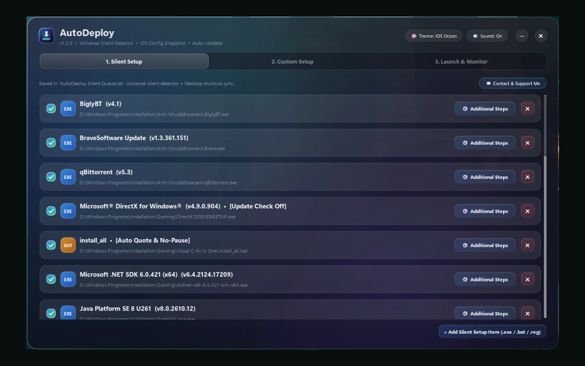

Selected work
Documented tools and analytical case studies, each accompanied by source files, queries, and reproducible steps.
Windows tools
Standalone executable utility
What I can build for you
Focused desktop utilities and structured data workflows built around clear requirements.
01
↗
Windows tools & automation
Standalone desktop utilities packaged as single-file Windows executables with zero user setup, batch/registry handling, and bilingual interfaces.
Python
PyQt6
Win32 API
Standalone .EXE
02
↗
Data analysis & dashboards
Raw CSV cleaning, relational SQL querying, and interactive Excel or Power BI dashboards structured to answer concrete operational questions.
SQL
Excel
Power Query
Power BI (DAX)
03
↓
Custom tools on request
Tailored Python utilities, file organizers, or reporting scripts built to automate repetitive desktop or spreadsheet tasks.
Python Scripts
File Automation
EN / AR UI
About
I am Esam Haraz, based in Egypt. I build Windows desktop tools with Python and PyQt6 packaged as standalone executables, and work on data analysis projects using SQL, Excel, and Power BI.
I am at the beginning of my journey and state that openly—every project I publish is documented from start to finish, including data cleaning notes, queries, and reproducible steps.
1
Desktop tool shipped
3
Data case studies
EN / AR
Bilingual documentation & interfaces
Start a project
Share what you are looking to build or analyze, or reach out directly through any channel below.